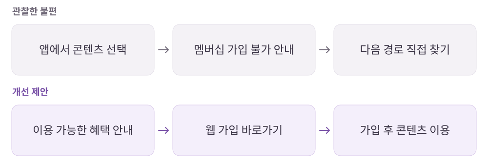
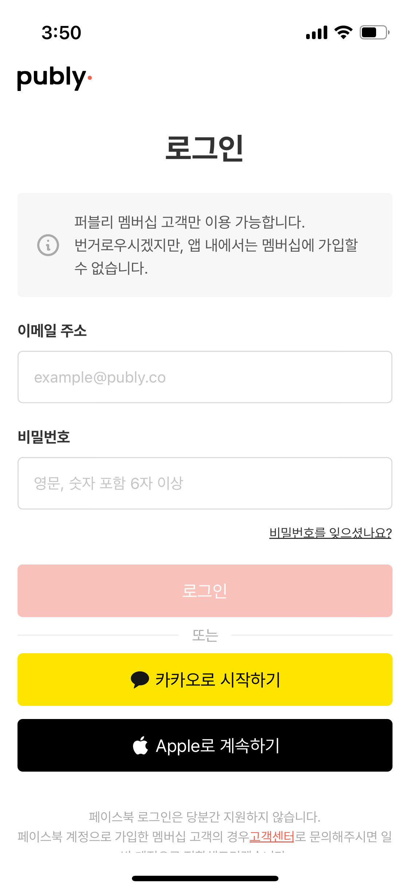

퍼블리
콘텐츠를 다시 읽고 멤버십을 이용하는 과정의 불편을 어떻게 줄일까?
일을 더 잘하고 싶은 사람에게 실무 노하우와 템플릿을 제공하는 커리어 콘텐츠 구독 서비스.
학습 목적이어 읽기의 상태 저장 방식, 발행 알림, 앱·웹 멤버십 관리 동선을 살폈습니다. 콘텐츠 탐색 개선과 함께 포인트 지급·소멸, 공유·저작권·부정 이용 정책도 정리했습니다.
개인 학습 기록 · 관찰한 경험, 기획 의도에 대한 해석, 개선 제안을 구분해 정리했습니다. 수치·요금·정책은 분석 당시 조사한 자료이며 현재 기준이나 직접 만든 성과가 아닙니다.
01사용자와 해결 방향
누구를 위한 서비스인가학습할 시간은 부족하지만 업무 문제를 빠르게 해결하고 싶은 직장인.
Why · 사용자가 찾는 이유
업무에서 막힌 문제를 해결하고 싶지만, 필요한 자료를 찾거나 긴 강의를 들을 시간이 부족하다. 실무에 바로 적용할 방법과 문서 예시가 필요하다.
What · 제공 경험과 해결 방식
실무자의 노하우와 업무 템플릿을 구독해 읽고 활용하는 경험을 제공한다. 주제별 탐색·이어 읽기·형광펜으로 짧은 시간에도 필요한 내용을 찾고 다시 볼 수 있다.
직장인의 정보 탐색 비용
빠르게 바뀌는 업무와 협업 지식, 상사에게 반복해서 묻기 어려운 상황, 방대한 자료와 부족한 학습 시간을 문제로 정의했다. 현직자의 노하우·템플릿을 지속 제공하는 구독 모델을 그 답으로 해석했다.
02핵심 기능과 벤치마킹
- 분량·분류 안내
- 읽기 전 필요한 시간과 주제를 판단.
- 이어보기·형광펜
- 중단한 읽기를 이어가고 중요한 내용을 다시 찾음.
- 발행 예약·학습 알림
- 관심 콘텐츠의 발행과 학습 습관을 재방문 동기로 연결.
비교해서 살펴본 지점
- 커리어리
- 콘텐츠 학습에서 현직자와의 소통으로 이어지는 접점.
- 커리어리 스킬업
- 주제와 관련된 강의로 학습을 확장하는 연결 가능성.
03사용자 흐름과 기획 의도
막힌 가입 안내를 다음 행동으로 연결

관찰한 경험
- 이어보기, 분량·분류 표시, 형광펜, 발행 예정 콘텐츠 알림을 살펴봤습니다.
- 분석 당시 앱과 웹으로 나뉜 멤버십 관리 동선과 여러 단계의 콘텐츠 탐색에서 불편을 기록했습니다.
틈새 학습을 이어주는 기능
- 고르기
- 짧은 콘텐츠와 분량·분류 표시로 읽기 전 선택 시간을 줄임.
- 읽기
- 이어보기와 형광펜·메모, 표시한 내용 모아보기로 중단 이후 복귀와 능동 학습 지원.
- 돌아오기
- 발행 예정 콘텐츠 알림 신청과 생활 패턴에 맞춘 학습 알림. 사용자 수요를 파악하면서 재방문 계기도 만드는 방식으로 해석.
이어보기의 저장 방식을 비교 학습
| 검토 방식 | 역할 |
|---|---|
| 쿠키·세션 | 클라이언트·방문 상태에서 마지막 읽기 위치 기억 |
| 데이터베이스 | 사용자별 상태를 지속 저장하고 다시 검색 |
| 로그인 세션 | 인증된 사용자와 읽기 상태를 연결 |
| API | 앱·웹에서 서버의 상태 저장·조회 요청 |
구현 가능한 방식을 비교한 학습이며 퍼블리의 실제 내부 구조로 확인한 것은 아니다.
왜 이렇게 설계했을까 · 나의 해석
- 짧게 읽고 나가는 행동을 실패로 보지 않고, 다시 이어 읽을 수 있게 설계하는 점에 주목했습니다.
- 읽을거리의 양보다 필요한 정보를 찾는 시간과 다시 돌아오는 계기가 중요하다고 봤습니다.
04문제와 개선 제안
Pain Point · 걸리는 지점
- 앱에서 멤버십에 가입할 수 없다는 안내만으로는 다음 행동이 분명하지 않았다.
- 결제 내역과 해지 등 멤버십 관리가 앱 안에서 이어지지 않았다.
- 주제별 하위 분류를 여러 번 거쳐야 특정 정보를 찾을 수 있었다.
내가 바꿔본다면
- 가입 불가 안내 대신 웹에서 할 수 있는 다음 행동과 혜택을 함께 안내.
- 저자·질문·강의 간 연결을 강화하고, 검색한 주제의 관련 내용을 AI로 정리하는 탐색 방식 검토.

크게 보기 ↗차단 안내를 다음 행동으로
비회원의 진입 제한뿐 아니라 회원도 앱에서 결제 내역·해지를 확인하기 어렵다는 점을 기록했다. 가입 불가 사유에 머물지 않고 웹에서 얻을 혜택과 등록·관리 경로를 함께 안내하는 문구를 제안했다.
서비스 간 연결과 정보 검색
- 커리어리
- 저자 프로필로 이동하는 연결을 넘어, 인기 질문을 넘겨보는 작은 배너를 퍼블리에 배치하는 안.
- 커리어리 스킬업
- 명확한 연결을 찾지 못해 읽는 주제와 관련된 강의를 함께 제안하는 안.
- AI 탐색
- 여러 폴더를 내려가는 큐레이션 대신, 검색어 관련 내용을 서비스 내부 글에서 모아 요약하는 방식 검토.
05장점과 아쉬운 지점
좋았던 점
- 정보와 템플릿이 모여 있어 자료 탐색 시간을 줄인다.
- 이어보기와 표시 기능이 틈새 학습에 맞춰져 있다.
아쉬운 점 · 더 살필 점
- 콘텐츠에 들어가기 전의 가입·관리 동선이 학습의 진입 장벽이 될 수 있다.
구독을 선택할 이유와 남는 불편
실무 정보·현직자 템플릿을 한곳에 모아 시간을 줄이는 것이 강점이다. 반면 다른 곳에서도 접할 수 있는 내용, 앱 내 이용약관 부재, 웹에 한정된 가입·해지는 구독 차별성과 이용 편의의 과제로 봤다.
06내가 주목한 점
포인트의 발생·차감·복원 규칙
당시 기록한 정책을 발생 사유별로 나눴다. 현재 멤버십 정책을 안내하는 표가 아니다.
| 구분 | 당시 메모의 처리 기준 |
|---|---|
| 사용 | 멤버십 정기 결제에서 포인트를 자동 차감하고 잔액만 결제 |
| 자동 적립 | 출석·습관 응원, 앱 설치, 유저·저자 추천 가입 포인트는 적립 1년이 되는 달 말일까지 |
| 환불·결제 취소 복원 | 멤버십·스킬업 환불 등으로 돌아온 포인트는 복원일로부터 30일 |
| 프로모션 | 해당 행사에서 안내한 별도 기간 적용 |
콘텐츠 묶음보다 학습 관계를 판매
독점 콘텐츠·현직자 Q&A, 추천·알림, 정기 구독, 온라인·오프라인 모임, 이용권, 제휴와 퍼블리 유니버스를 차별화 요소로 정리했다. 당시 멤버십의 월 5회 이메일·SMS 무료 공유도 유입 접점으로 봤다. 필요한 때만 검색하는 곳보다 매일 도움받는 “랜선 사수” 역할에 주목했다.
저작권·부정 이용·중복 게시 정책
- 조사한 규칙
- 권한 없는 콘텐츠 배포, 복제 프로그램·캡처·녹화·스크래핑·크롤링을 당시 약관의 부정 이용 항목으로 살핌. 게시물 권리·책임은 작성자에게 있으나 동일 내용 반복 등록은 사전 통지 없이 삭제할 수 있다는 조항도 검토.
- 제재 제안
- 구체적 조치가 보이지 않아 기간 정지 → 일부 기능 제한 → 반복 위반 시 영구 제한의 단계적 대응을 개인 안으로 제시.
- 예방 제안
- 운영자 사후 점검의 한계를 줄이기 위해 게시 전 유사도·표절 검사를 검토. 일정 기준 초과 시 등록을 제한하는 아이디어이며 실제 적용 정책이 아님.
기획에 가져갈 기준
- 불가능하다는 안내 뒤에는 가능한 다음 행동과 이동 경로를 제공할 것.
- 이어보기에는 사용자별 읽기 상태의 저장·복원 기준이 필요하다.
- 구독 콘텐츠의 공유·저작권·포인트 정책도 이용 경험의 일부로 정리할 것.